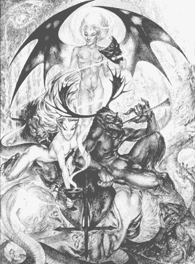

|

Lucifer--Latin: "Light-Bearer" who carried a torch and served as herald of the dawn. In classical mythology, the Morning Star (the planet Venus), personified as a male figure. |
The Organic Laboratory In our church there exist no set rules or guidelines to be bothered with---for they are only distractions. Nothing is required except a true willingness to move the Self forward and beyond. Everyone must give and take as much as they can. We must remember that in the course of life we are both student and teacher.
An overall church curriculum is naught. Rather than follow a rigid, dogmatic reading list, we encourage our members to explore experientially ourselves wherever desire might lead. By daily exploration of true desires we gain insight of who we really are underneath our societal roles. As we release the bonds of cultural programming and "normal" behavior, we reclaim the power to choose any manner in which to live our lives. We shed all false notions of self to clearly see life as it is. Our method is the synthesis of ancient and modern thought. The road to freedom is engendered by the realization of the True Will.
A Diurnian Guide to Self - Mutation In order for an individual to advance toward the next step in human evolution a monumental transformation must first occur in the mind. We must look into the mind, at the point of consciousness itself. What is consciousness? It is a state of awareness, which is transmitted within the information-gathering center, whereupon further connections may be developed. These perceptions may be expressed through primitive, atavistic thought-forms. When a symbol is traced to its source it may be used to affect the outside world.
In the beginning true change can only come from an outside source. Its effect must be made at a time when one is open to new imprinting (in moments of intense emotion). Results, which occur from re-imprinting, have proven to create higher order connections and may be used to develop inner-powers and abilities. The aspirant to the inmost light should remember that if this method is done improperly it will create new engrams which, when formed, are difficult to root out and destroy. |